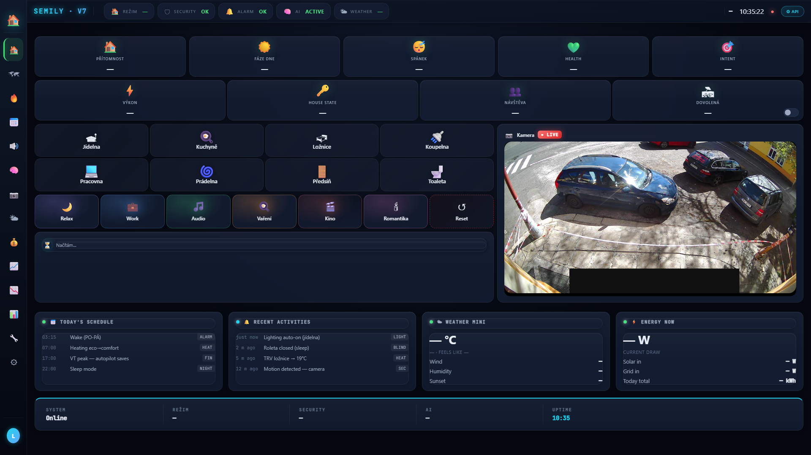

Morning
Alarm → morning_brain → topení preset=home + boost koupelna 23 °C 60 min, TV mute, briefing fáze 1+2. Cíl: uvedení do dne pomalu, žádný šok.
🏠 Prožívání · Atmosféra a scény
Tři stavy, čtyři fáze dne, jeden centrální sleep guard. Ráno tě probudí pomalu, přes den nechá pracovat, večer nabídne klid, v noci ztichne. Bez explicitních „scén" v Homey UI — všechno běží přes time-of-day a state-aware logiku ve skriptech.
Co to dělá
Místo „scén" v Homey UI — kde uživatel klikne na „Filmový režim" a něco se stane — je tady state-aware vrstva. Systém sám pozná, jestli je ráno před budíkem, jestli zrovna spím, jestli jsem v relax módu po práci, jestli je pozdě večer. Z toho se odvodí všechno ostatní: světla, topení, audio, notifikace.
Centrální proměnná je sh_spim ('yes' / 'no'). Když je 'yes', všech
5 subsystémů (světla, audio, topení, robot, alerty) automaticky tlumí nebo úplně
zhasíná. Set/unset body jsou tři: Sleep Manual button (Aqara Cube), Vstal Kuchyně
motion (probuzení), phone geofence.
Nad sleep state běží tři brain skripty: morning_brain (ranní rituál), sleep_brain (večerní shutdown), AI coordinator (situation classifier — ráno briefing, večer comfort suggest). Žádný z nich není „scéna" — jsou to handlers reagující na time + state + presence.

Denní provoz
Kontext se mění plynule. Hraniční momenty mají vlastní handler.
Heating layer 1 startuje 30 min před alarm — koupelna +2 °C, toaleta +1 °C. Sleep state ještě 'yes', světla zatím tma. Systém se připravuje, ale nevyrušuje.
Alarm time → morning_brain: ensureHeatingMorningMode (preset=home), TV mute, briefing fáze 1 do kuchyně. Sleep state se odepne při motion v kuchyni. 03:30 briefing fáze 2.
Light routing dle lux + presence, audio idle, topení dle schedule + AI vrstvy. Žádné automatické scény — každý subsystém řeší svůj kontext samostatně. AI coordinator monitoruje, ale většinu času ticho.
AI coordinator může vyhodnotit „evening + idle scene" → comfort_suggest. TTS přečte návrh, neauto-execute (po bathroom misroute fix). Privacy guard zapnut — roleta nahoře = open space lights blokovaná.
Heating night slot převzal už ze schedule (22 h). Sleep_brain při sleep confirm:
preset boost→home reset, audio mute, robot blokován. sh_spim='yes'
gate pro celou noc.
Scény
Spouští se z time + state + presence. Manual override jen výjimečně.
Alarm → morning_brain → topení preset=home + boost koupelna 23 °C 60 min, TV mute, briefing fáze 1+2. Cíl: uvedení do dne pomalu, žádný šok.
Default state — žádná scéna, jen reaktivní subsystémy. Lux řídí světla, schedule řídí topení, audio idle. Brain Guardian běží jednou za 15 min.
AI coordinator detect „evening + idle" → comfort_suggest TTS. Privacy guard aktivní (roleta > 20 % blokuje open lights). Možný relax scene při user accept (Cube / voice).
Sleep button (Cube) nebo manual flow → sh_spim='yes' → sleep_brain
cleanup (boost reset, audio mute, robot block). Schedule night slot už drží
nižší teploty.
Sleep state active. Motion v koupelně má vlastní jemnou cestu (bathroom router dim mode). Critical alerts (anti-freeze, gas, water) přebijí přes safety bypass.
Hardware
Není to hardware ve standardním smyslu — je to kompozice senzorů + skriptů.
User intent · gestural · Zigbee
Šestistranná kostka. Každá strana = jiný režim. Otáčení = volume change. Ťuk = trigger. Hlavní user input pro „accept comfort suggest" / „sleep manual" / atd. Vyřešený TV channel bug v1.11 (channel_up → key_channel_up).
Presence · sleep wake detection
Detekuje klidného člověka. Pro atmosféra logiku jako sleep_wake marker — kdy se v ložnici začne hýbat (probuzení) vs. klid (spánek). Plus open space presence pro evening comfort detection.
Skripty · sh_morning_brain_v1 · sh_sleep_brain_v2
Dva orchestrátory — ranní rituál a večerní cleanup. Každý drží 5+ subsystémů v synchronu. Morning: heating + audio + TV. Sleep: heating reset + audio mute + robot block + sleep state set.
Mobile app · GPS · radius 100 m
Detekce home/away. Multi-signal confirm s motion v 5 min okně. Trigger pro preset přepínač + sleep state suggest (když sám doma a 22+ h).
sh_ai_coordinator_v1 · cron 5 min
Klasifikuje aktuální situation (idle, busy, evening_idle, morning_prep, comfort_suggest). Vstup pro AI brain a comfort_suggest TTS. Levels 0–5, úroveň 4 = TTS suggest.
Pro tech-savvy
Sleep state architektura, brain handlers, AI coordinator levels.
Jediná proměnná, která gateuje 5 subsystémů. sh_spim='yes':
Set body: Sleep Manual (Cubo button), Vstal Kuchyně (motion at unusual hour
implies waking), Phone geofence (alone home + late hour). Sync s native
Homey presence API set_asleep / set_awake —
nikdy nesmazat jako duplicate.
sh_morning_brain_v1 v3.5+ má 4 ensure functions, každou volá flow
při alarm / motion / fallback:
ensureHeatingMorningMode() — preset=home, koupelna boost 23 °C 60 minensureAudioMorningMode() — TV mute, briefing trigger via sh_gemini_modeensureLightsMorningMode() — kuchyně dim, open space dle FP2ensureSleepStateUnset() — sh_spim='no' (gate uvolněna)Každá function je idempotent — můžou se zavolat víckrát během rituálu, výsledek stejný. Žádný state mutation kromě desired-state writeback.
sh_sleep_brain_v2 v3.1+ spouštěn při Sleep button / late-evening
auto-detect:
ensureHeatingSleepMode() — boost preset reset (boost→home), schedule night slot převezmeensureAudioSleepMode() — vše stop, prev_playing flag clearensureLightsSleepMode() — fade out 5 s, pak offensureRobotSleepMode() — block + cancel queued cleaningensureSleepStateSet() — sh_spim='yes' (gate aktivace)
sh_ai_coordinator_v1 cron 5 min vyhodnotí 6 situations:
Bug 25.4. — level 4 sám spustil bathroom radio bez user accept. Fix:
prev_playing guard v sh_tts_resume_exec_v1 v1.8.
Žádná explicitní „scéna" — jen TOD bucket, který subsystémy čtou:
Granty kontextu nejsou hard-coded v skriptech — čtou se z konfigurace
sh_cfg_tod_*_start. Sezónní úpravy (zimní/letní čas) jdou
přes config update, ne kód.
Související